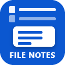
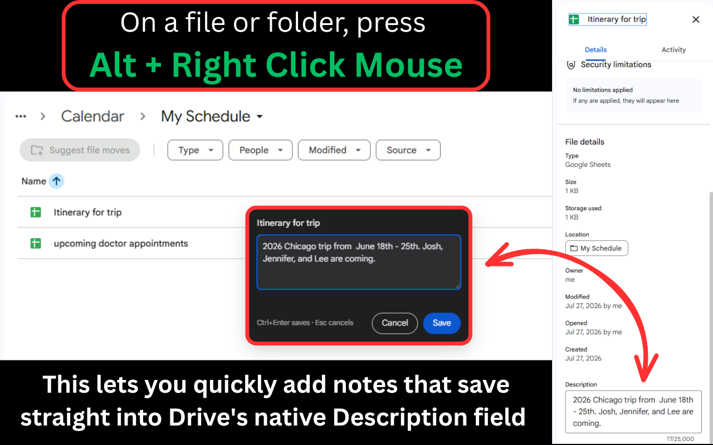

File NotesFile Notes is a Chrome extension that lets you add or edit the description on any Google Drive file or folder from a keyboard shortcut. Drive already searches that field, so everything you write there is findable later without lengthening a single filename.
Add to Chrome Free for one Google account. No sign-up.

Google Drive puts a description field on every file and folder, but reaching it takes a right-click, a details panel and a scroll. Most people never find it. File Notes puts it one shortcut away, and because it writes to Drive's own field rather than storing anything separately, your notes travel with the file and show up in Drive search.
Your ordinary right-click is untouched. Drive's own menu behaves exactly as it did before.
Because Drive search reads it. Write the words you will actually reach for months from now, like invoice, Q3, unpaid, Henderson, and the filename stays Invoice 1042.pdf. Describe what search cannot see in a video or an image. Record why a draft was rejected, who asked for it, and what is still missing, without burying any of it inside the document.
If you have more than one Google account signed into Chrome, File Notes works in all of them. It reads which account a Drive tab belongs to and edits that account's file, so notes taken in a work tab and a personal tab each save where they should. The toolbar icon lists every account you have connected and opens the right Drive in one click.
| Free | Unlocked | |
|---|---|---|
| Price | $0 | $2 once |
| Google accounts | One | Unlimited |
| Every other feature | Included | Included |
One payment, not a subscription. There is nothing to renew and nothing to cancel. The unlock travels with your Chrome profile, so signing into Chrome on another computer carries it across.
If you were already using several accounts before this became a paid feature, they stay unlocked.
Payment is handled by ExtensionPay and Stripe on their own pages. Card details never reach this extension or its developer.
No analytics, no tracking, no advertising, and no account to create. Notes travel from your browser to your own Google Drive and nowhere else. The extension can read file and folder names and descriptions, and cannot read the contents of your files.
Full detail is in the privacy policy.
Send anything, including bug reports and feature requests, through the contact form, or email filenotes.gdrive@gmail.com.